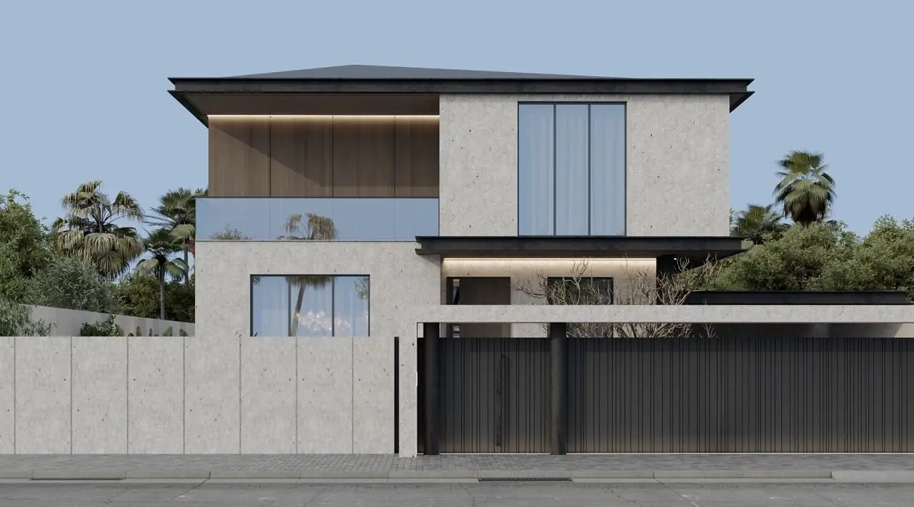
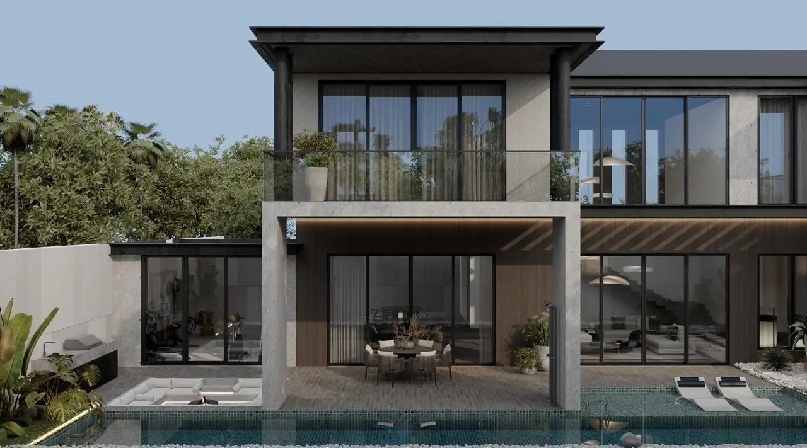
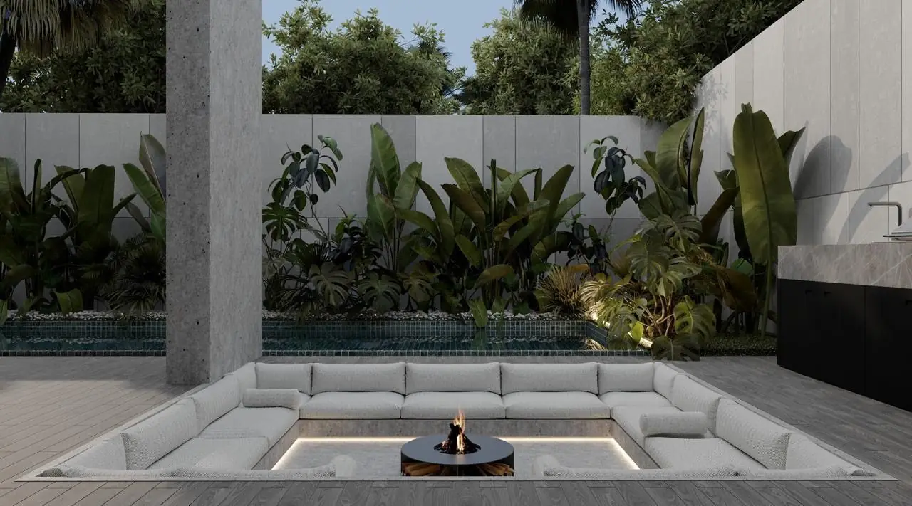
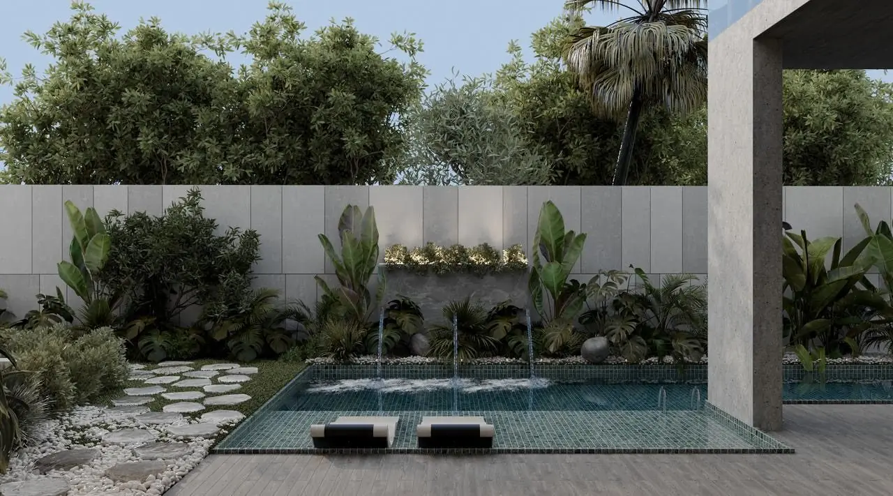
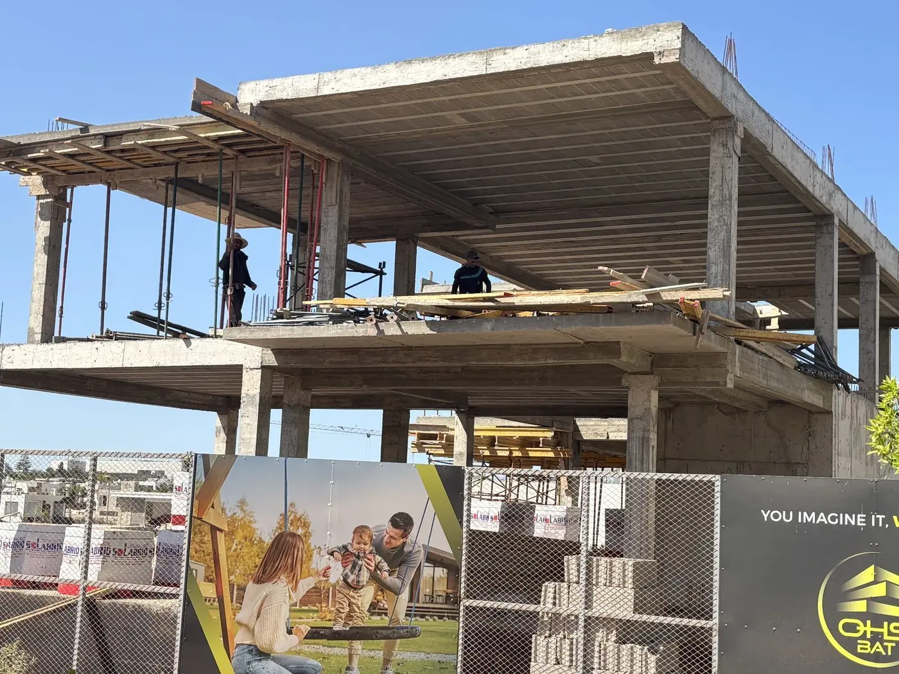
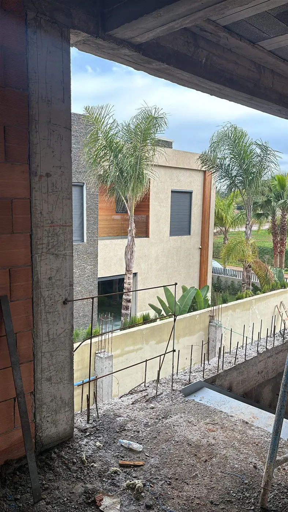
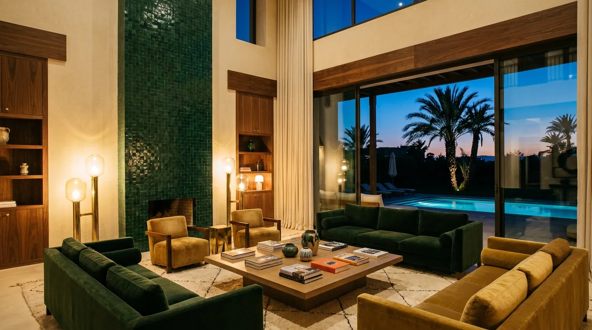
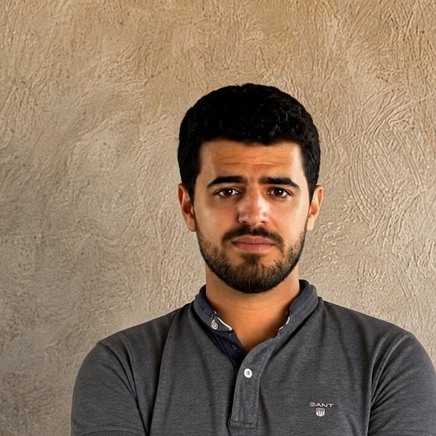

Votre villa au Maroc, construite comme si vous y étiez.
Chaque mardi matin, 16 photos de votre chantier sur votre téléphone — avant votre café à Bruxelles, Dubaï ou Montréal. Votre capital sous séquestre notarial, à votre nom. Vous gardez le pouvoir. Nous portons la charge.

Construire loin de chez soi exige une confiance que je n'ai jamais prise à la légère. ZAF BAT existe parce que les familles posaient toujours la même question : à qui peut-on confier cela sérieusement ?

Nous construisons peu. Nous construisons bien.
Les projets d'exception ne se gagnent pas par le bruit, mais par la préparation. Par la discipline. Par la précision. Par la qualité de la direction. Par l'attention aux détails que beaucoup négligent.
Notre ambition n'est pas de devenir le plus gros maître d'ouvrage du Maroc. C'est de devenir la référence pour ceux qui n'acceptent pas l'à-peu-près.
Construire sans direction structurée,
c'est jouer contre les statistiques.
Le risque n'est pas une opinion : il est mesuré.
projets de grande ampleur dépassent leur budget initial — un schéma constant depuis 70 ans, sur tous les continents.
Pr. Bent Flyvbjerg, Université d'Oxford ↗des grands chantiers subissent un dépassement de coût supérieur à 30 % ; 77 % accusent au moins 40 % de retard.
McKinsey Global Institute, 2017 ↗la progression de la productivité du secteur en vingt ans — contre 2,8 % pour l'économie mondiale. Le secteur ne se corrige pas seul.
McKinsey Global Institute, 2017 ↗Votre argent ne passe
jamais par nos mains.
signature sur chaque jalon
à votre nom exclusivement
visa du notaire — 4 verrous

Un matin, le chantier ne sera plus qu'un souvenir.
Il restera la demeure — et ce qu'elle transmettra.
Trois manières de construire.
Une seule vous représente.
VEFA, Loi 107-12 (modifiant la Loi 44-00)
- Le promoteur est propriétaire du terrain
- Il décide des matériaux et du planning
- Aucun arbitrage personnel possible
Entrepreneur direct
- Vous gérez seul les corps d'état
- Aucune supervision à l'étranger
- Aucun reporting, aucune signature
Maître d'ouvrage délégué
- Vous restez propriétaire du terrain
- Nous pilotons l'architecte CNOA en votre nom
- Reporting hebdomadaire signé
- Responsabilité décennale (art. 769 DOC) + assurance RCD Loi 59-13
La première fois que vous pousserez la porte, rien ne vous surprendra. Vous aurez tout vu naître, mardi après mardi, à des milliers de kilomètres. Il ne restera qu'une chose à faire : vivre.
Villa Californie, Casablanca
Son propriétaire dirige ses affaires, souvent loin du Maroc. Sa villa avance sans lui — et chaque mardi, il le voit.

Façade rue
Image de synthèse
Terrasse arrière
Double hauteur
Conversation pit
Foyer central
Piscine zen
Bassin miroirConstruire depuis l'étranger,
sans jamais se sentir loin.


Rapport du mardi — votre villa
Gros œuvre : avancement conforme au planning. 16 photos datées, PV signé.
Séquestre : aucun décaissement sans votre signature.
Chaque mardi, avant votre café. — exemple illustratif
Du premier doute
au permis d'habiter.
Six phases nommées, chacune ancrée à un acte légal — du diagnostic du terrain à la garantie de dix ans. Vous savez toujours où vous en êtes, ce qui a été payé, et ce qui vient ensuite.
Nous nommons la peur avant
que vous ne la formuliez.
Le chantier, sans filtre.


Reportage hebdomadaire signé chaque mardi, 16 photographies datées et géolocalisées, avancement par lot. Visioconférence mensuelle à votre fuseau horaire.
Entre 6 % et 9 % du coût total des travaux, selon complexité. Plafond ferme contractualisé sur chaque mandat.
Aucun avenant sans signature électronique conforme aux Lois 43-20 et 53-05. Budget consolidé après l'étape Diagnostic.
Non. Le Diagnostic inclut la vérification des titres fonciers et le premier rendez-vous notaire.
En VEFA (Loi 107-12 modifiant la Loi 44-00), le promoteur est propriétaire. En MOD, vous restez propriétaire, nous pilotons en votre nom.
La responsabilité décennale (art. 769 du DOC) engage tout constructeur sur 10 ans pour les désordres affectant la solidité. L'assurance RCD organisée par la Loi 59-13 (textes d'application en vigueur depuis le 30 décembre 2024) est mobilisée pour les ouvrages éligibles. Attestation remise à la réception.
Oui. Procuration apostillée (Convention de La Haye 1961) acceptée, signature électronique conforme à la Loi 43-20 (services de confiance, en vigueur depuis le 13 juillet 2023). Le mandat s'adosse à un cadre notarial : séquestre et marchés signés devant notaire.
Banque de premier rang (Attijariwafa, Bank of Africa, Banque Populaire). Aucun décaissement sans PV signé conjointement.
Notre meilleure preuve,
c'est ce que nous savons.
Des guides clairs et sourcés, à lire avant de signer quoi que ce soit. En accès libre.

Et un été, enfin :
recevoir les vôtres, chez vous.

Parlons de votre projet.
Vous parlerez aux deux fondateurs — jamais à un commercial. Six mandats par an, une discrétion totale, un premier échange privé sous 48 heures.
Réponse le jour même · Lun–Sam, 9h–20h · Directement par un fondateur